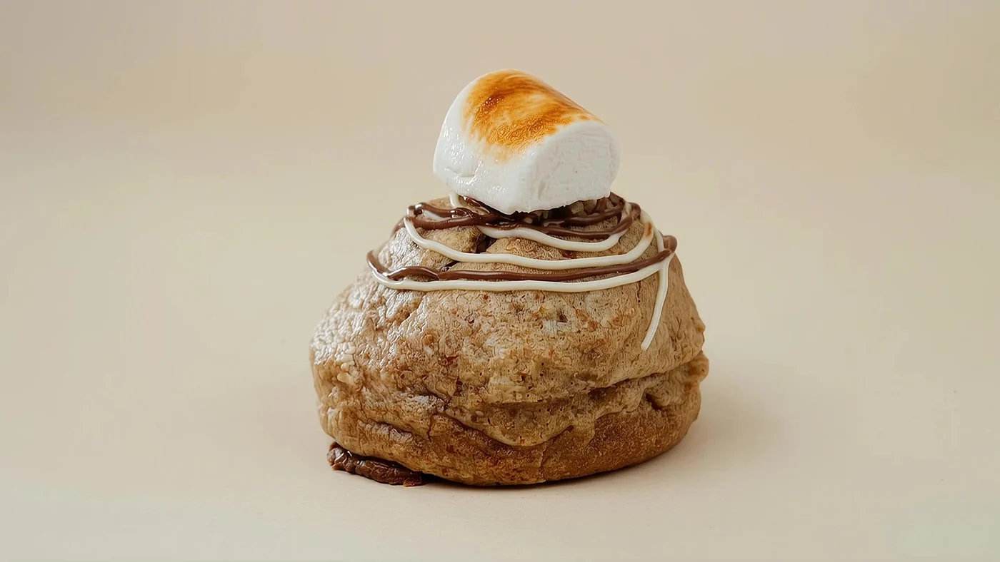
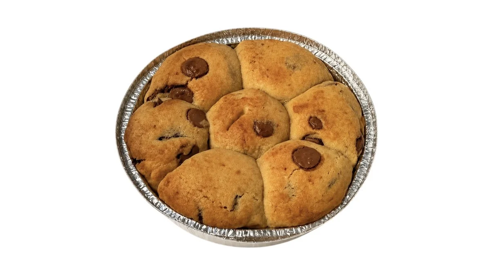
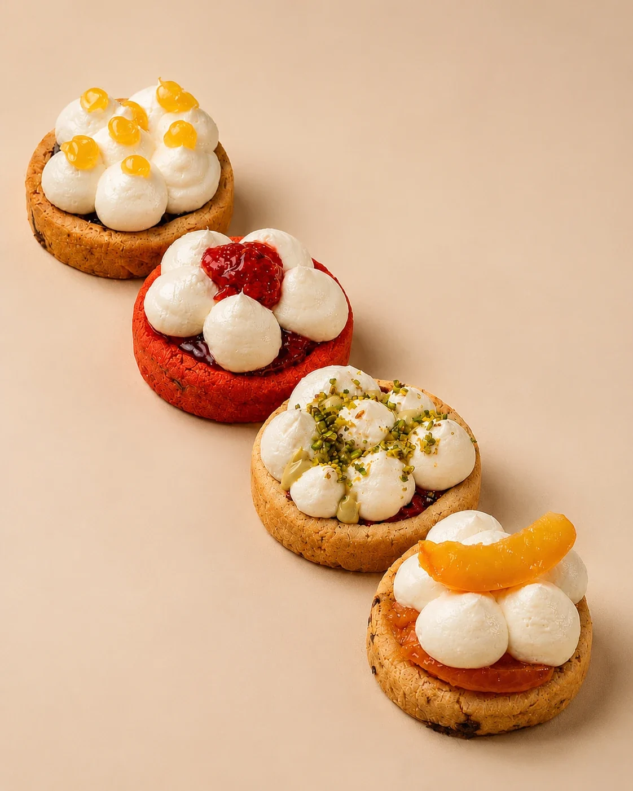
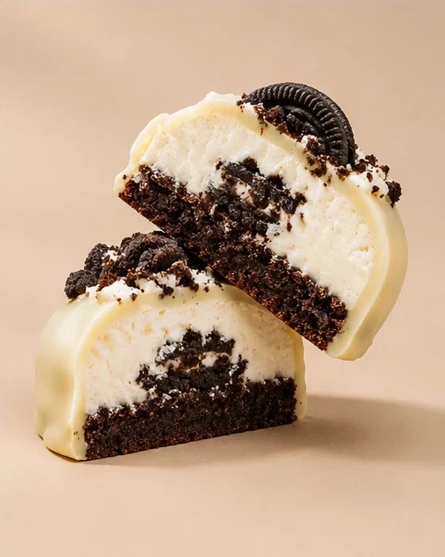
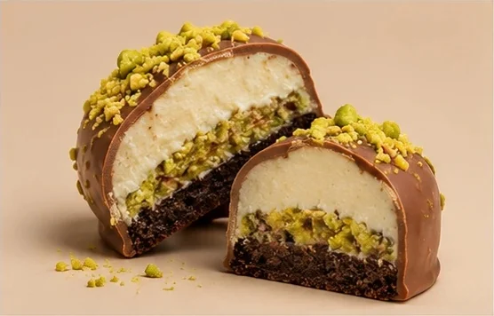
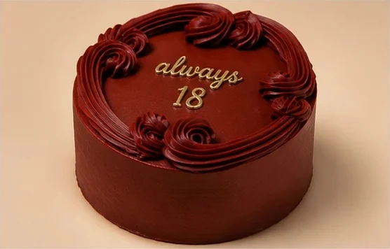
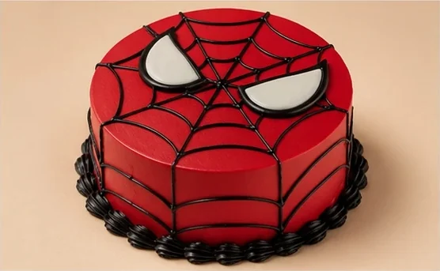

Marşmelou kuki
Qızardılmış marşmelou, süd və ağ şokolad şırımları. İki yerə bölüncə içindəki marşmelou uzanır.
Sifariş etQızardılmış marşmelou, şokolad və bölünəndə uzanan yumşaq iç. Tag Cake-in imza kukisi.
Böyük, qalın və içi dolu. Hər kukinin öz xəmiri, öz içliyi və öz üst bəzəyi var.

Qızardılmış marşmelou, süd və ağ şokolad şırımları. İki yerə bölüncə içindəki marşmelou uzanır.
Sifariş et
Qabda bişirilir, qaşıqla yeyilir.
Kukilər bir qabda yan-yana bişir: kənarları qızarır, ortası yumşaq qalır. Süfrənin ortasına qoyun, hər kəs öz qaşığı ilə götürsün.
Skup kuki sifariş etKuki əsası üzərində yüngül krem, şokolad örtüyü altında yumşaq çizkeyk.

Dörd kuki tart, dörd fərqli üst: meyvə, moruq, püstə və şaftalı ilə.

Kakaolu əsas, Oreo parçalı krem pendir və ağ şokolad örtüyü.

Püstəli kadayıf qatı, krem pendir və süd şokoladı örtüyü.
Ad günləri və xüsusi günlər üçün. Rəngi, dizaynı və üzərindəki yazını birlikdə seçirik.

Şokoladlı biskvit, moruq və istədiyiniz yazı.
Şokolad, albalı və çizkeyk qatı bir tortda.

Karamel və şokolad, uşaqların sevimli qəhrəmanı üslubunda.
Menyudan kuki, skup kuki, çizkeyk və ya tort seçin.
WhatsApp və ya Instagram-da bizə yazın. Tort üçün dizaynı və yazını bildirin.
Sifarişiniz hazır olanda sizə xəbər veririk.